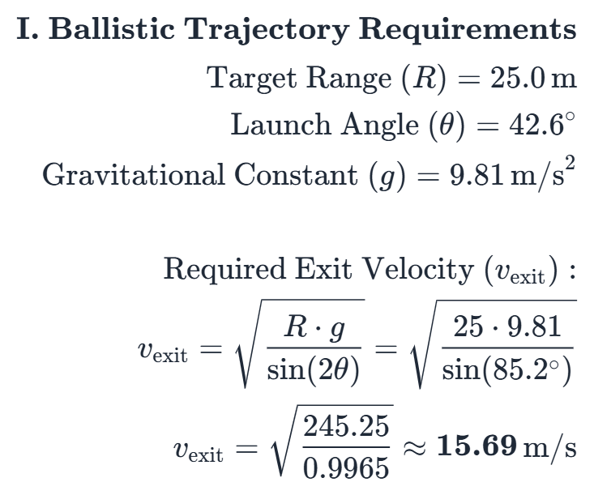
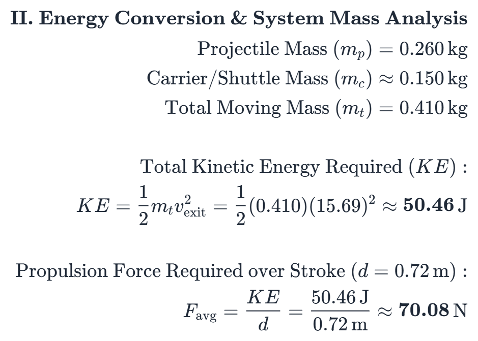
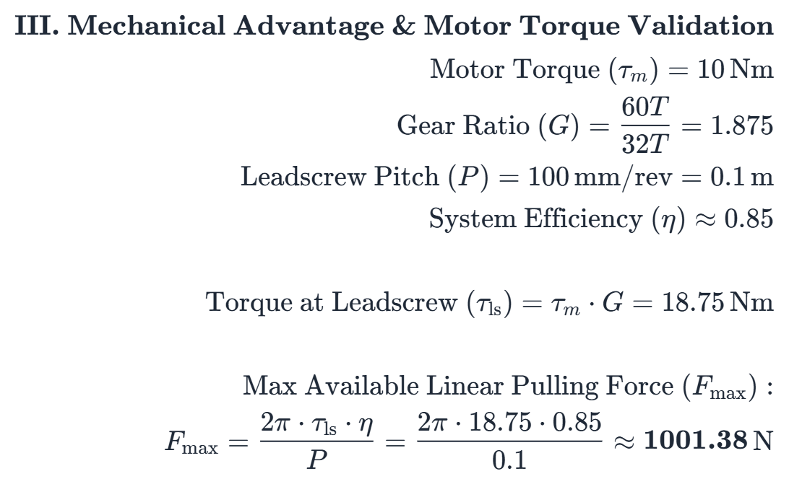
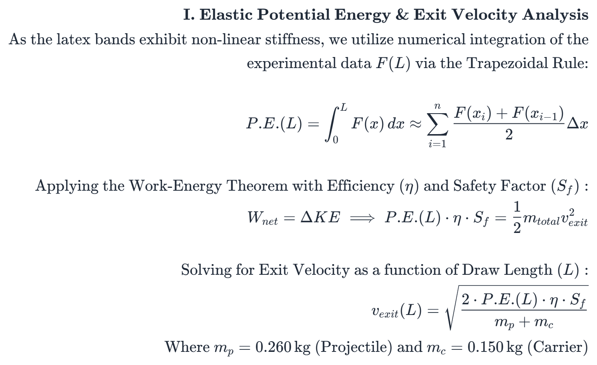
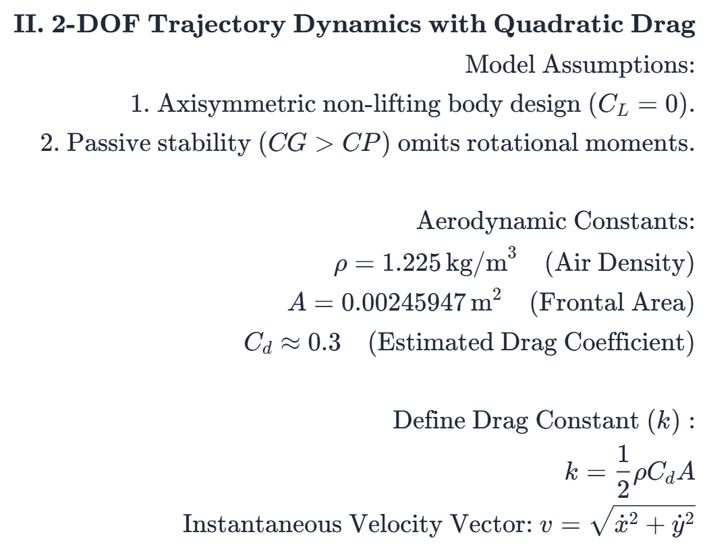
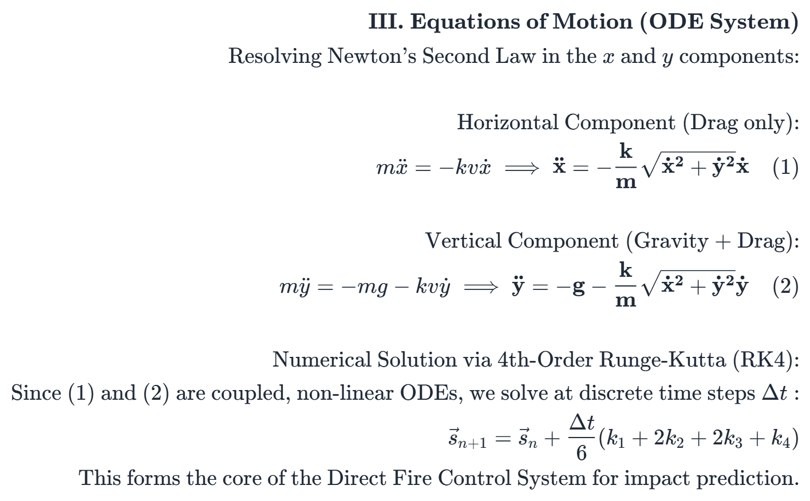
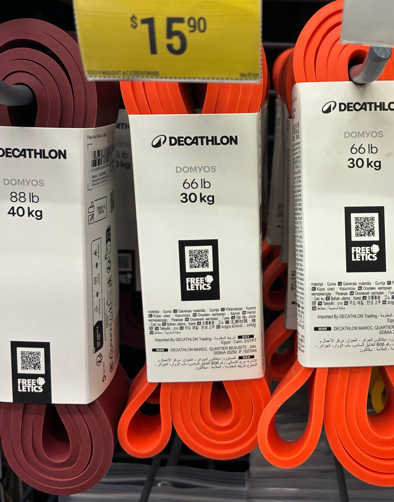

<style>
  /* --- D.A.R.T. Launcher 3D Hotspots (Hover Version) --- */

    /* 1. The Anchor Dot - Now with Glow and Pulse */
    .hotspot {
    background: #ef4444; /* red-600 */
    border-radius: 50%;
    border: none;
    width: 14px;
    height: 14px;
    cursor: pointer;
    position: relative;
    z-index: 10;
    transition: all 0.3s ease;
  
    /* The Glow Effect */
    box-shadow: 0 0 10px rgba(239, 68, 68, 0.8), 
              0 0 20px rgba(239, 68, 68, 0.4);
    }

/* 2. The Pulse Animation (This makes them "Glow") */
.hotspot::after {
  content: "";
  position: absolute;
  top: 50%;
  left: 50%;
  width: 100%;
  height: 100%;
  border-radius: 50%;
  background: #ef4444;
  transform: translate(-50%, -50%);
  animation: pulse 2s infinite;
  z-index: -1;
}

@keyframes pulse {
  0% { transform: translate(-50%, -50%) scale(1); opacity: 0.8; }
  100% { transform: translate(-50%, -50%) scale(2.5); opacity: 0; }
}

/* 3. Improved Hover State */
.hotspot:hover {
  background: #ffffff !important;
  opacity: 1 !important;
  transform: scale(1.4);
  box-shadow: 0 0 20px #ffffff, 0 0 40px rgba(239, 68, 68, 0.6);
}

/* 4. Tightened Info Box (Annotation) */
.annotation {
  position: absolute;
  /* Reduced distance from dot (was 20px, now 10px) */
  bottom: 10px; 
  left: 50%;
  transform: translateX(-50%);
  background: rgba(9, 9, 11, 0.95);
  border: 1px solid #3f3f46;
  color: #ffffff;
  padding: 8px 12px;
  border-radius: 8px;
  width: 160px; /* Slightly narrower to stay centered */
  text-align: center;
  opacity: 0;
  pointer-events: none;
  transition: all 0.3s cubic-bezier(0.175, 0.885, 0.32, 1.275);
  z-index: 100;
}

    /* Hover Effect for Text - Pulling it closer */
    .hotspot:hover .annotation {
    opacity: 1;
    bottom: 22px; /* Pulls it up just slightly from the dot */
    }

    /* Visibility when blocked by model - increased from 0.2 to 0.4 */
    .hotspot:not([data-visible]) {
    opacity: 0.4;
    filter: blur(1px); /* Looks like it's actually 'inside' the model */
    }

  /* Hotspot Typography */
  .hotspot-title {
    display: block;
    font-weight: 800;
    text-transform: uppercase;
    font-size: 10px;
    letter-spacing: 0.1em;
    color: #ef4444;
    margin-bottom: 2px;
  }

  .hotspot-text {
    display: block;
    font-size: 12px;
    line-height: 1.4;
    color: #d1d1d6;
  }


  model-viewer {
    width: 100%;
    height: 100%;
    background-color: transparent;
  }
</style>


<section id="launcher" class="pt-24 border-t border-zinc-800" data-aos="fade-up">
    <div class="flex flex-col md:flex-row items-start justify-between gap-12 pb-12">
        
        <div class="flex-1" px-4 md:px-0">
            <h3 class="text-4xl font-bold mb-6 text-red-primary uppercase tracking-tighter">
                Launcher Design
            </h3>
            <p class="text-gray-400 text-xl md:text-2xl leading-relaxed border-l-2 border-red-900 pl-8">
                Mastering high-velocity impulse, the D.A.R.T. launcher utilizes a 750mm acceleration stroke and a 130mm arrestor zone to convert 10Nm of torque into a consistent 25-meter ballistic range
            </p>
        </div>

        <div class="w-48 shrink-0 text-center group">
            <div class="relative mb-4">
                
                
                <div class="absolute -bottom-2 -right-2 bg-red-600 text-[9px] font-black text-white px-2 py-1 rounded uppercase tracking-tighter">
                    Lead Eng
                </div>
            </div>
            
            <h4 class="text-white font-bold text-xl mb-0">Shyam</h4>
            <p class="text-red-primary font-mono text-xs uppercase tracking-widest font-bold mt-1">Y4 ME</p>
        </div>

    </div>

    <div class="max-w-6xl mx-auto px-4 mb-24" data-aos="zoom-in">
        <div class="relative group">
            <div class="absolute -inset-1 bg-gradient-to-r from-red-600/20 to-zinc-900/10 rounded-[2.5rem] blur-2xl opacity-30"></div>
            <video src="assets/shyamsecond/launcherfullvid.MOV" 
                controls 
                playsinline 
                class="relative rounded-[2rem] border border-zinc-800 w-full shadow-2xl object-cover aspect-video">
                Your browser does not support the video tag.
            </video>
            <div class="absolute bottom-6 left-8">
                <p class="text-zinc-400 font-mono text-[10px] uppercase tracking-[0.5em] bg-black/60 backdrop-blur-md px-4 py-2 rounded-full border border-zinc-800">
                    Live Field Test: 25.5m Target Acquisition
                </p>
            </div>
        </div>
    </div>

    <div class="max-w-5xl px-4 mb-16">
        <h4 class="text-red-600 font-mono text-md uppercase tracking-[0.4em] mb-4">Engineering Narrative</h4>
        <h2 class="text-4xl md:text-3xl font-bold text-white mb-8 tracking-tighter">The Path to <span class="text-red-600">Ballistic Precision</span></h2>
    
        <div class="grid grid-cols-1 md:grid-cols-2 gap-12">
            <p class="text-zinc-400 text-lg leading-relaxed">
                The launcher is the subsystem responsible to launch each projectile with concistent force on every shot. The launcher has to deliver the exact force per shot to ensure basic mechanical precision to minimally hit level 1 target, before the active projectile mid-air corrections take over. Developing an autonomous ballistic platform required more than just raw power; it demanded a synchronized control system capable of managing the non-linear discharge of <b>Elastic Potential Energy</b>. Over an intensive 7-month development cycle, the launcher evolved through three distinct generations, each addressing critical failure points identified during field testing.
            </p>
            <div class="space-y-4">
                <p class="text-zinc-400 text-lg leading-relaxed">
                    Key engineering hurdles included <b>dynamic velocity modulation</b> to account for varied ranges, <b>peak torque management</b> within the single-leadscrew transmission, and the optimization of <b>kinetic energy conversion efficiency</b> across a 750mm stroke.
                </p>
                <div class="flex gap-4 items-center pt-4 border-t border-zinc-900">
                    <div class="text-center">
                        <p class="text-white font-bold text-xl">3</p>
                        <p class="text-zinc-300 font-mono text-[10px] uppercase">Major Iterations</p>
                    </div>
                    <div class="w-px h-8 bg-zinc-800"></div>
                    <div class="text-center">
                        <p class="text-white font-bold text-xl">167</p>
                        <p class="text-zinc-300 font-mono text-[10px] uppercase">Test Cycles</p>
                    </div>
                    <div class="w-px h-8 bg-zinc-800"></div>
                    <div class="text-center">
                        <p class="text-white font-bold text-xl">1001N</p>
                        <p class="text-zinc-300 font-mono text-[10px] uppercase">Max Force</p>
                    </div>
                </div>
            </div>
        </div>
    </div>


    <div class="grid grid-cols-1 md:grid-cols-3 gap-6 mb-24 px-4">
        <div class="bg-zinc-950 rounded-2xl border border-red-900/30 p-4 h-[400px] relative">
            <span class="absolute top-4 left-4 z-10 bg-red-600 text-[10px] font-black px-2 py-1 rounded uppercase">Final V3</span>
            <model-viewer src="assets/launcher_v3.glb" camera-controls auto-rotate shadow-intensity="1" class="w-full h-full"></model-viewer>
        </div>

        <div class="bg-zinc-950 rounded-2xl border border-zinc-900 p-4 h-[400px] relative">
            <span class="absolute top-4 left-4 z-10 bg-zinc-800 text-[10px] font-black px-2 py-1 rounded uppercase">Iteration V2</span>
            <model-viewer src="assets/alu_launcher_v2.glb" camera-controls auto-rotate shadow-intensity="1" class="w-full h-full"></model-viewer>
        </div>

        <div class="bg-zinc-950 rounded-2xl border border-zinc-900 p-4 h-[400px] relative">
            <span class="absolute top-4 left-4 z-10 bg-zinc-800 text-[10px] font-black px-2 py-1 rounded uppercase">Prototype V1</span>
            <model-viewer src="assets/practice_launcher.glb" camera-controls auto-rotate shadow-intensity="1" class="w-full h-full"></model-viewer>
        </div>
    </div>


    <div class="space-y-12 mb-16">
        <div class="max-w-4xl">
            <h4 class="text-red-600 font-mono text-lg uppercase tracking-[0.3em] mb-4 font-bold italic">Following Interim Progress, Nov 2025</h4>
            <h2 class="text-4xl font-bold text-white mb-6">Prototype V1: Scrap-metal proof of concept</h2>
            <p class="text-zinc-250 text-lg leading-relaxed">
                Our initial development began with a makeshift scrap-metal assembly to test basic propulsion. This was necessary since NUS Calibur Robotics has never attempted to use elastic potential energy as means of propulsion. As reported in the interim report, the launcher proved the elastic bands to be promising. The projectile travelled in a straight line consistently with no visible roll, covered a range of 20m and followed a projectile motion in the air.
            </p>
        </div>

        <div class="grid grid-cols-1 md:grid-cols-2 gap-4">
            <video src="assets/scrapmetallauncher.MOV" controls playsinline class="rounded-xl border border-zinc-800 w-full">Your browser does not support the video tag.</video>
            
        </div>

        <div class="max-w-4xl">
            <p class="text-zinc-250 text-lg leading-relaxed">
                However, this prototype yielded a critical failure; the projectile carrier (shuttle) collided violently with the front frame, proving that <b>unmanaged kinetic energy is destructive.</b>
            </p>
        </div>

        <div class="grid grid-cols-2 gap-4 max-w-2xl mx-auto">
            
            
        </div>

        <div class="grid grid-cols-1 md:grid-cols-3 gap-8 pt-12">
            <div class="p-8 bg-zinc-950 border border-zinc-900 rounded-2xl">
                <h5 class="text-red-600 font-bold mb-4 uppercase text-sm tracking-widest">Structural Damage</h5>
                <p class="text-zinc-300 text-sm">Impact force at v_max compromised the front frame and fractured the projectile carrier.</p>
            </div>
            <div class="p-8 bg-zinc-950 border border-zinc-900 rounded-2xl">
                <h5 class="text-red-600 font-bold mb-4 uppercase text-sm tracking-widest">Acoustic Energy Loss</h5>
                <p class="text-zinc-300 text-sm">Energy dissipated as sound/vibration rather than being transferred to the projectile.</p>
            </div>
            <div class="p-8 bg-zinc-950 border border-red-900/30 rounded-2xl">
                <h5 class="text-red-600 font-bold mb-4 uppercase text-sm tracking-widest">The "Spring" Misconception</h5>
                <p class="text-zinc-300 text-sm">Heavy-duty springs acted as parasitic absorbers, robbing the projectile of momentum before exit.</p>
            </div>
        </div>

        <div class="grid grid-cols-1 xl:grid-cols-2 items-center gap-8 xl:gap-16 bg-zinc-950/50 p-8 md:p-12 rounded-[2rem] border border-zinc-900 shadow-2xl">
    
            <div class="flex flex-row justify-center gap-4 md:gap-8 w-full">
        
                <div class="flex flex-col items-center gap-4 group flex-1 max-w-[320px]">
                    
                    <p class="text-zinc-300 font-mono text-[10px] md:text-[12px] uppercase tracking-[0.3em] group-hover:text-red-500 transition-colors text-center">
                        spring damper
                    </p>
                </div>

                <div class="flex flex-col items-center gap-4 group flex-1 max-w-[320px]">
                    
                    <p class="text-zinc-300 font-mono text-[10px] md:text-[12px] uppercase tracking-[0.3em] group-hover:text-red-500 transition-colors text-center">
                        rubber band damper
                    </p>
                </div>
            </div>

            <div class="w-full max-w-2xl mx-auto xl:mx-0">
                <h5 class="text-red-600 font-mono text-sm md:text-base uppercase tracking-[0.4em] mb-4 text-center xl:text-left">
                    Mechanical Damping Analysis
                </h5>
                <div class="border-l-2 border-red-900 pl-6 md:pl-10">
                    <p class="text-zinc-400 text-base md:text-lg xl:text-xl leading-relaxed font-light italic">
                        To prevent the carrier from smashing into the front of the launcher, two damping methods were implemented. 
                        Testing revealed that <b>pre-tensioned elastic rubber band damping</b> provided superior energy dissipation 
                        compared to mechanical springs—which acted as a "dead stop"—effectively preventing the structural fatigue 
                        observed in Prototype 0.
                    </p>
                </div>
            </div>
        </div>
    </div>


    <section class="px-6 mb-32" data-aos="fade-up">
        <div class="max-w-6xl mx-auto">
        
            <div class="max-w-4xl mb-16">
                <h4 class="text-red-600 font-mono text-sm uppercase tracking-[0.4em] mb-4">Ballistic Validation</h4>
                <h2 class="text-4xl font-bold text-white mb-8">Model Refinement & <span class="text-red-600">Load Correction</span></h2>
            
                <div class="w-full">
                    <div class="space-y-6 text-zinc-400 text-lg leading-relaxed">
                        <p>
                            Following the interim report, the ballistic trajectory model was re-evaluated to address a significant deviation between theoretical predictions and empirical test data. While initial calculations predicted a load of <b>20kgf</b>, real-world measurements revealed a systemic requirement of <b>110kgf</b>.
                        </p>
                        <p>
                            This discrepancy was traced to the <b>parasitic mass</b> of the linear rail carriage and the aluminum carrier assembly. Incorporating these neglected variables into our Work-Energy equations allows the model to align with <b>95%+ accuracy</b>. I also developed a dynamic <b>Fire Control Algorithm</b> which would take in user inputs if the new projectile design's mass changes and other variables, and it will give a first best estimate for the required launch angle and torque for the motor t reach the target 25m distance(which also can be changed).
                        </p>
                    </div>
                </div>
            </div>

            <div class="grid grid-cols-1 gap-6">
            
                <details class="group bg-zinc-950 border border-zinc-900 rounded-[2rem] overflow-hidden transition-all duration-500 shadow-2xl">
                    <summary class="flex items-center justify-between p-8 cursor-pointer list-none hover:bg-zinc-900/50 transition-colors">
                        <div class="flex flex-col gap-1">
                            <h5 class="text-red-700 text-md font-mono uppercase tracking-[0.5em]">Final Ballistic Math Calculations</h5>
                            <p class="text-zinc-500 text-xs font-mono uppercase tracking-widest">Comprehensive 2-DOF ODE Derivations & RK4 Dynamics</p>
                        </div>
                        <span class="text-red-600 transform transition-transform duration-300 group-open:rotate-180">
                            <svg xmlns="http://www.w3.org/2000/svg" width="24" height="24" fill="none" viewBox="0 0 24 24" stroke="currentColor" stroke-width="2">
                                <path stroke-linecap="round" stroke-linejoin="round" d="M19 9l-7 7-7-7" />
                            </svg>
                        </span>
                    </summary>
                    <div class="p-8 border-t border-zinc-900 bg-black/40">
                        <div class="grid grid-cols-1 md:grid-cols-2 gap-8 items-start">
                            <div class="flex justify-center"></div>
                            <div class="flex justify-center"></div>
                            <div class="flex justify-center"></div>
                            <div class="flex justify-center"></div>
                            <div class="flex justify-center"></div>
                            <div class="flex justify-center"></div>
                        </div>
                        <div class="mt-12 pt-8 border-t border-zinc-900/50 text-center">
                            <p class="text-zinc-200 font-mono text-[10px] uppercase tracking-widest">Numerical Integration: 4th-Order Runge-Kutta Method | dt = 0.001s | written by Shyam</p>
                        </div>
                    </div>
                </details>

                <details class="group bg-zinc-950 border border-zinc-900 rounded-[2rem] overflow-hidden transition-all duration-500 shadow-2xl">
                    <summary class="flex items-center justify-between p-8 cursor-pointer list-none hover:bg-zinc-900/50 transition-colors">
                        <div class="flex flex-col gap-1">
                            <h5 class="text-blue-500 text-md font-mono uppercase tracking-[0.5em]">Fire Control System Algorithm</h5>
                            <p class="text-zinc-500 text-xs font-mono uppercase tracking-widest">Dynamic Trajectory Recalculation (Python Implementation)</p>
                        </div>
                        <span class="text-blue-500 transform transition-transform duration-300 group-open:rotate-180">
                            <svg xmlns="http://www.w3.org/2000/svg" width="24" height="24" fill="none" viewBox="0 0 24 24" stroke="currentColor" stroke-width="2">
                                <path stroke-linecap="round" stroke-linejoin="round" d="M19 9l-7 7-7-7" />
                            </svg>
                        </span>
                    </summary>
                    <div class="p-4 border-t border-zinc-900 bg-[#1e1e1e]"> 
                        <pre class="rounded-xl overflow-x-auto"><code class="language-python">
    import numpy as np
    from scipy.integrate import solve_ivp
    from scipy.interpolate import interp1d

    # author : S Shyam Y4 ME (2026)
    # all rights reserved
    # mathematical equations referenced above

    # --- SYSTEM & ENVIRONMENTAL CONSTANTS ---
    M_PROJ = 0.260           # Mass of Projectile (kg)
    M_CARR = 0.435           # Mass of Carrier/Shuttle (kg)
    M_SYS  = M_PROJ + M_CARR # Total Accelerated Mass (0.695 kg)

    CD = 0.35                # Drag Coefficient
    AREA = 0.00245947        # Frontal Area (m^2)
    RHO = 1.225              # Air Density (kg/m^3)
    G = 9.81                 # Gravity (m/s^2)
    ETA_SYS = 0.88           # Estimated System Efficiency (Latex + Rail friction)

    TARGET_X = 25.0          # Target Distance (m)
    TARGET_Y = 1.1165        # Target Height (m)
    Y_INIT = 0.205           # Launcher Exit Height (m)

    # Quadratic Drag Constant
    K_DRAG = 0.5 * RHO * CD * AREA

    # --- EXPERIMENTAL BAND CHARACTERIZATION 18-LOOP DATA ---
    # Representative data for the 18-loop configuration (Distance in m, Force in N)
    dist_data = np.array([0.0, 0.1, 0.2, 0.3, 0.4, 0.5, 0.6, 0.705])
    force_data = np.array([0.0, 80.0, 160.0, 240.0, 310.0, 370.0, 420.0, 480.0])

    # High-fidelity linear interpolation for force curve
    band_interpolator = interp1d(dist_data, force_data, kind='linear', fill_value="extrapolate")

    def calculate_v0(L):
        """
        Calculates Exit Velocity using Work-Energy Theorem for Coupled Mass.
        L = Drawback length (m)
        """
        x_steps = np.linspace(0, L, 200)
        f_steps = band_interpolator(x_steps)
    
        # Calculate Potential Energy (PE) using Trapezoidal integration
        PE_total = np.trapz(f_steps, x_steps)
    
        # Solve for v0: KE = 0.5 * m_sys * v0^2
        # Using M_SYS here because the bands must move both carrier and dart
        v0 = np.sqrt((2 * ETA_SYS * PE_total) / M_SYS)
        return v0

    # --- FLIGHT DYNAMICS, Ballistic Engine ---
    def flight_ode(t, state):
        """
        State vector S = [x, y, vx, vy]
        Note: Using M_PROJ here because the dart flies alone after launch.
        """
        x, y, vx, vy = state
        v = np.sqrt(vx**2 + vy**2)
    
        ax = -(K_DRAG / M_PROJ) * v * vx
        ay = -G - (K_DRAG / M_PROJ) * v * vy
    
        return [vx, vy, ax, ay]

    # --- SIMULATION & OPTIMIZATION ---
    def simulate_shot(alpha, L):
        v0 = calculate_v0(L)
        rad = np.radians(alpha)
        s0 = [0, Y_INIT, v0 * np.cos(rad), v0 * np.sin(rad)]
    
        # Define an event to stop sim when target_x is reached
        def hit_target_plane(t, s): return s[0] - TARGET_X
        hit_target_plane.terminal = True
    
        sol = solve_ivp(flight_ode, [0, 5], s0, events=hit_target_plane, max_step=0.01)
    
        if sol.t_events[0].size > 0:
            y_impact = sol.y_events[0][0][1]
            t_impact = sol.t_events[0][0]
            return y_impact, t_impact
        return -999, -1

    # --- GRID SEARCH (Real-World Calibration) ---
    print("Running Grid Search for Optimal Launch Parameters...")

    alpha_range = np.linspace(10, 45, 36) # 1 degree steps
    L_range = np.linspace(0.4, 0.705, 31) # 1 cm steps

    best_error = float('inf')
    best_params = (0, 0)

    for alpha in alpha_range:
        for L in L_range:
            y_hit, t_hit = simulate_shot(alpha, L)
            error = abs(y_hit - TARGET_Y)
        
            if error < best_error:
                best_error = error
                best_params = (alpha, L, y_hit, t_hit)

    # --- OUTPUT FINAL RESULTS ---
    alpha, L, y_final, t_final = best_params
    print(f"\n--- OPTIMAL SOLUTION FOUND ---")
    print(f"Best Angle (α): {alpha:.2f}°")
    print(f"Best Draw Length (L): {L:.3f} m")
    print(f"Required Peak Force: {band_interpolator(L):.2f} N")
    print(f"Resulting Exit Velocity (v0): {calculate_v0(L):.2f} m/s")
    print(f"Predicted Impact Height: {y_final:.4f} m (Target: {TARGET_Y}m)")
                    </code></pre>
                        </code></pre>
                    </div>
                </details>

            </div>
        </div>
    </section>

    <style>
        /* Styling for the Math Images */
        .math-render { filter: invert(1) brightness(1.2); opacity: 0.9; transition: opacity 0.3s ease; }
        .math-render:hover { opacity: 1; }
        summary::-webkit-details-marker { display: none; }
    </style>

    <div class="bg-zinc-950 rounded-[3rem] p-12 md:p-20 border border-zinc-900 mb-32">
        <div class="grid grid-cols-1 lg:grid-cols-2 gap-16 items-center">
            <div>
                <h2 class="text-4xl font-bold text-white mb-8">Strategic Pivot: The Deceleration Zone</h2>
                <p class="text-zinc-250 text-lg mb-8">
                    Inspired by <b>Aircraft Carrier Steam Catapults</b>, we realized high-velocity ballistics require a distinct separation between the Power Stroke and the Arrestor Stroke.
                </p>
                
                <div class="space-y-6">
                    <div class="flex items-center gap-6 p-4 rounded-xl bg-zinc-900/50 border border-zinc-800">
                        <div class="w-1/2 text-red-600 font-mono text-sm uppercase">Aircraft Carrier</div>
                        <div class="w-1/2 text-white font-mono text-sm uppercase">D.A.R.T. System</div>
                    </div>
                    <div class="flex gap-6 px-4">
                        <div class="w-1/2 text-zinc-300 text-sm">Shuttle connects to nose wheel</div>
                        <div class="w-1/2 text-zinc-300 text-sm">Feeder loads projectile into carrier sled</div>
                    </div>
                    <div class="flex gap-6 px-4 border-t border-zinc-900 pt-4">
                        <div class="w-1/2 text-zinc-300 text-sm">High-pressure steam propulsion</div>
                        <div class="w-1/2 text-zinc-300 text-sm">High-tension spearfishing bands</div>
                    </div>
                    <div class="flex gap-6 px-4 border-t border-zinc-900 pt-4">
                        <div class="w-1/2 text-zinc-300 text-sm">Water brakes stop shuttle</div>
                        <div class="w-1/2 text-zinc-300 text-sm">Elastic damping bands arrest sled</div>
                    </div>
                </div>
            </div>
            <div class="space-y-6">
                <video src="assets/catapultexpl.MP4" controls playsinline class="rounded-2xl shadow-2xl w-full">Your browser does not support the video tag.</video>
                <p class="text-zinc-300 text-sm italic text-center uppercase tracking-widest">Reference: Naval Steam Catapult Mechanics</p>
            </div>
        </div>
    </div>

    <div class="mb-32">
        <div class="flex flex-col lg:flex-row gap-12 items-center mb-16">
            <div class="flex-1">
                <video src="assets/shyamsecond/launchersequence.MOV" controls playsinline class="rounded-3xl border border-zinc-800 w-full shadow-2xl">Your browser does not support the video tag.</video>
                <p class="text-center text-zinc-300 text-[10px] uppercase mt-4 tracking-tighter">Click to play: Final Launcher Operation</p>
            </div>
            <div class="flex-1">
                <h4 class="text-2xl font-bold text-white mb-6 uppercase tracking-tight">Zonal Launcher Architecture</h4>
                <table class="w-full text-left border-collapse">
                    <thead>
                        <tr class="border-b border-zinc-800">
                            <th class="py-4 pr-12 text-red-600 font-mono text-sm uppercase">Zone</th>
                            <th class="py-4 pr-12 text-red-600 font-mono text-sm uppercase">Length</th>
                            <th class="py-4 text-red-600 font-mono text-sm uppercase">Function</th>
                        </tr>
                    </thead>
                    <tbody class="text-zinc-400 text-sm">
                        <tr class="border-b border-zinc-900">
                            <td class="py-6 pr-12 text-white font-bold">Acceleration</td>
                            <td class="py-6 pr-12">750.0 mm</td>
                            <td class="py-6">Elastic bands provide continuous positive work ($+W$).</td>
                        </tr>
                        <tr class="border-b border-zinc-900">
                            <td class="py-6 pr-12 text-white font-bold">Deceleration</td>
                            <td class="py-6 pr-12">129.2 mm</td>
                            <td class="py-6">Secondary damping bands safely arrest the carrier.</td>
                        </tr>
                        <tr>
                            <td class="py-6 pr-12 text-red-600 font-bold italic">Total</td>
                            <td class="py-6 pr-12 font-bold text-white">879.2 mm</td>
                            <td class="py-6 italic">Optimized within RMUC size constraints.</td>
                        </tr>
                    </tbody>
                </table>
            </div>
        </div>

        <div class="w-full bg-zinc-950 border border-zinc-900 rounded-3xl p-12 text-center">
            <h5 class="text-white font-bold mb-8 uppercase tracking-[0.2em]">Deceleration Visualization</h5>
            <video src="assets/shyamsecond/launcherslomo.MP4" autoplay loop muted playsinline class="w-full max-w-4xl mx-auto rounded-xl shadow-2xl mb-8"></video>
            <p class="text-zinc-500 text-sm max-w-2xl mx-auto">
                Slow-motion capture of the 130mm deceleration zone in action. Note the projectile separation occurs exactly as the primary bands reach zero-tension, maximizing momentum transfer.
            </p>
        </div>
    </div>

    <div class="grid grid-cols-1 md:grid-cols-3 gap-8 pb-32 px-6">
        <div class="p-8 bg-zinc-950 border border-zinc-900 rounded-2xl relative overflow-hidden group">
            <div class="absolute top-0 left-0 w-1 h-full bg-red-600"></div>
            <h5 class="text-white font-bold mb-4 uppercase text-xs tracking-widest">Zero-Force Separation</h5>
            <p class="text-zinc-400 text-sm leading-relaxed">The projectile detaches from the carrier <b>before</b> deceleration begins, ensuring no parasitic drag affects the exit vector.</p>
        </div>
        <div class="p-8 bg-zinc-950 border border-zinc-900 rounded-2xl relative overflow-hidden group">
            <div class="absolute top-0 left-0 w-1 h-full bg-red-600"></div>
            <h5 class="text-white font-bold mb-4 uppercase text-xs tracking-widest">Structural Preservation</h5>
            <p class="text-zinc-400 text-sm leading-relaxed">Kinetic energy is dissipated over a 130mm distance via secondary bands, preventing frame fatigue and fracture.</p>
        </div>
        <div class="p-8 bg-zinc-950 border border-zinc-900 rounded-2xl relative overflow-hidden group">
            <div class="absolute top-0 left-0 w-1 h-full bg-red-600"></div>
            <h5 class="text-white font-bold mb-4 uppercase text-xs tracking-widest">Momentum Maximization</h5>
            <p class="text-zinc-400 text-sm leading-relaxed">100% of the "Follow-Through" energy is preserved in the projectile, resulting in the successful 25m range.</p>
        </div>
    </div>


    <div class="py-24 border-t border-zinc-900" data-aos="fade-up">
        <div class="max-w-4xl px-6 mb-16">
            <h2 class="text-4xl font-bold text-white mb-6">Prototype V2: The Dual Leadscrew Rig</h2>
            <p class="text-zinc-400 text-lg leading-relaxed">
                Transitioning from pulling the launcher by hand in V1, the V2 Launcher was engineered to automate the power stroke. We moved to a <b>Dual Leadscrew Configuration</b> to ensure symmetric force distribution, utilizing a high-torque motor driving a 32T:100T gear reduction.
            </p>
        </div>

        <div class="max-w-3xl mx-auto px-6 mb-16" data-aos="fade-up">
            <div class="grid grid-cols-1 md:grid-cols-2 gap-8">
        
                <video src="assets/v2pullback.MP4" 
                    muted 
                    controls 
                    playsinline 
                    class="rounded-3xl border border-zinc-900 w-full shadow-2xl">
                    Your browser does not support the video tag.
                </video>

                <video src="assets/v2release.MP4" 
                    controls 
                    playsinline 
                    class="rounded-3xl border border-zinc-900 w-full shadow-2xl">
                    Your browser does not support the video tag.
                </video>

            </div>
        </div>

        <div class="grid grid-cols-1 lg:grid-cols-2 gap-12 px-6 items-stretch">
        
            <div class="bg-zinc-950 border border-zinc-900 rounded-3xl p-8 flex flex-col justify-center">
                <h5 class="text-white font-bold mb-6 uppercase tracking-widest text-xs">V2 Mechanical Specifications</h5>
                <div class="space-y-4">
                    <div class="flex justify-between border-b border-zinc-900 pb-2">
                        <span class="text-zinc-300 font-mono text-xs">Gear Ratio (G)</span>
                        <span class="text-white font-bold">100T : 32T (3.125)</span>
                    </div>
                    <div class="flex justify-between border-b border-zinc-900 pb-2">
                        <span class="text-zinc-300 font-mono text-xs">Leadscrew Pitch (P)</span>
                        <span class="text-white font-bold">100mm / rev</span>
                    </div>
                    <div class="flex justify-between border-b border-zinc-900 pb-2">
                        <span class="text-zinc-300 font-mono text-xs">Drawback Distance (L)</span>
                        <span class="text-white font-bold">750mm</span>
                    </div>
                    <div class="flex justify-between">
                        <span class="text-red-600 font-mono text-xs font-bold uppercase">Observed Failure</span>
                        <span class="text-red-600 font-bold underline">Motor Stall @ 30Nm</span>
                    </div>
                </div>
            </div>

            <div class="math-content text-white">
                <p class="text-zinc-500 text-xs mb-2 font-mono uppercase tracking-widest">1. Gear Torque Multiplication:</p>
                <div class="text-xl mb-12 font-mono tracking-tighter">
                    τ<sub>ls</sub> = τ<sub>motor</sub> × G = 30Nm / 3.125 = <span class="text-red-600 font-bold">9.6Nm</span>
                </div>

                <p class="text-zinc-500 text-xs mb-2 font-mono uppercase tracking-widest">2. Theoretical Linear Pulling Force (F):</p>
                <div class="flex flex-col font-mono text-xl tracking-tighter">
                    <div class="flex items-center gap-2">
                        <span>F = </span>
                        <div class="flex flex-col items-center">
                            <span class="px-2">2π · τ<sub>ls</sub> · η</span>
                            <div class="w-full h-px bg-zinc-700"></div>
                            <span class="px-2">P</span>
                        </div>
                        <span> = </span>
                        <div class="flex flex-col items-center">
                            <span class="px-2">2π · 9.6 · 0.9</span>
                            <div class="w-full h-px bg-zinc-700"></div>
                            <span class="px-2">0.1</span>
                        </div>
                        <span> ≈ <span class="text-red-600 font-bold">542.8N</span></span>
                    </div>
                </div>
            </div>
        </div>

        <div class="mt-16 px-6">
            <div class="bg-red-950/10 border-l-4 border-red-600 p-10 rounded-r-3xl shadow-xl">
                <h5 class="text-white font-bold mb-4 text-xl">Finding: The Speed-Torque Paradox</h5>
                <p class="text-zinc-400 leading-relaxed mb-8 text-lg">
                    While the V2 rig achieved massive linear force, it was <b>unnecessarily fast.</b> To drawback 750mm in the required 6s window, the required linear velocity is only 0.125m/s. At our gear ratio, the motor was over-revving, operating at the inefficient end of its power curve. Not only that but the motor was also struggling to hold the band at max draw length of 750mm, indicating more speed over torque. Therefore from a 32:100 gear up ratio we changed to 60:32 gearing down ratio
                </p>
            
                <div class="bg-black/40 p-8 rounded-2xl border border-white/5 text-center">
                    <p class="text-zinc-500 font-mono text-[10px] uppercase mb-6 tracking-[0.4em]">Required Operational RPM</p>
    
                    <div class="inline-flex items-center font-mono text-2xl text-white tracking-tighter">
                        <span>RPM<sub>req</sub> = </span>
                        <div class="flex flex-col items-center mx-3">
                            <span class="px-2">v × 60 × G</span>
                            <div class="w-full h-px bg-zinc-600"></div>
                            <span class="px-2">P</span>
                        </div>
                        <span> = </span>
                        <div class="flex flex-col items-center mx-3">
                            <span class="px-2">0.125 × 60 × 0.5333</span>
                            <div class="w-full h-px bg-zinc-600"></div>
                            <span class="px-2">0.1</span>
                        </div>
                        <span> ≈ <span class="text-red-600 font-bold">39.99 RPM</span></span>
                    </div>
                </div>
            </div>
        </div>
    </div>


    <div class="space-y-16 pb-32">
        <div class="max-w-4xl px-6">
            <h2 class="text-4xl font-bold text-white mb-6 uppercase tracking-tight">Theoretical Pivot: <span class="text-red-600">Energy Density</span></h2>
            <p class="text-zinc-250 text-lg leading-relaxed">
                The V2 launcher testing continued to use standard TPE Decathlon resistance bands. While providing a convenient baseline, our empirical data revealed a paradoxical performance issue: <b>As resistance increased, range decreased.</b>
            </p>
        </div>

        <div class="grid grid-cols-1 md:grid-cols-2 gap-8 px-6">
            
            <video src="assets/decathslowmo.MP4" autoplay loop muted playsinline class="rounded-2xl border border-zinc-800 shadow-2xl"></video>
        </div>

        <div class="px-6 overflow-x-auto">
            <table class="w-full text-left bg-zinc-950 border border-zinc-900 rounded-2xl overflow-hidden">
                <thead class="bg-zinc-900">
                    <tr>
                        <th class="p-6 text-red-600 font-mono text-xs uppercase">Propulsion Source</th>
                        <th class="p-6 text-red-600 font-mono text-xs uppercase">Max Resistance</th>
                        <th class="p-6 text-red-600 font-mono text-xs uppercase">Draw Length</th>
                        <th class="p-6 text-red-600 font-mono text-xs uppercase">Observed Range</th>
                    </tr>
                </thead>
                <tbody class="text-zinc-400">
                    <tr class="border-b border-zinc-900">
                        <td class="p-6 text-white font-bold">Orange (Decathlon)</td>
                        <td class="p-6">35kg</td>
                        <td class="p-6">0.7m</td>
                        <td class="p-6 text-green-500">20.0m</td>
                    </tr>
                    <tr class="border-b border-zinc-900">
                        <td class="p-6 text-white font-bold">Red (Decathlon)</td>
                        <td class="p-6">45kg</td>
                        <td class="p-6">0.5m</td>
                        <td class="p-6">15.0m</td>
                    </tr>
                    <tr class="bg-red-950/10">
                        <td class="p-6 text-white font-bold">Black (Decathlon)</td>
                        <td class="p-6">60kg</td>
                        <td class="p-6">0.5m</td>
                        <td class="p-6 text-red-500 font-bold">10.0m</td>
                    </tr>
                </tbody>
            </table>
        </div>
    </div>

    <div class="bg-zinc-950 border-y border-zinc-900 py-24 px-6 mb-32">
        <div class="max-w-5xl mx-auto grid grid-cols-1 lg:grid-cols-2 gap-16 items-center">
            <div class="space-y-8">
                <h3 class="text-3xl font-bold text-white uppercase tracking-tight">The Work-Energy <span class="text-red-600">Shift</span></h3>
                <p class="text-zinc-400 leading-relaxed">
                    We identified that the elastic modulus of TPE is optimized for slow isometric contraction, not ballistic release. Propulsion is not governed by instantaneous force at t=0, but by <b>Work Done (WD)</b> over the entire rail:
                </p>
                <div class="bg-zinc-950 border border-zinc-900 rounded-[2rem] p-10 text-center shadow-2xl" data-aos="fade-up">
                    <p class="text-zinc-100 font-mono text-[12.5px] uppercase mb-8 tracking-[0.4em]">Work-Energy Theorem: Integral Form</p>

                    <div class="inline-flex items-center font-mono text-3xl md:text-5xl text-white tracking-tighter">
                        <span class="mr-4 text-red-600 font-bold">WD = </span>
        
                        <div class="relative flex items-center pr-6">
                            <span class="text-6xl md:text-7xl font-light">∫</span>
            
                            <div class="absolute -right-1 flex flex-col justify-between h-full py-2 text-xs md:text-sm text-zinc-400">
                                <span class="leading-none italic">x</span>
                                <span class="leading-none">0</span>
                            </div>
                        </div>

                        <span class="ml-2">F(x) dx</span>
                    </div>
                    <p class="mt-10 text-zinc-200 text-[10px] uppercase font-mono tracking-[0.2em] opacity-50">
                        Cumulative energy discharge across the 750mm acceleration stroke
                    </p>
                </div>
                <p class="text-zinc-500 text-sm italic">
                    Exercise bands exhibited rapid force-drop-off; the tension plummeted to near-zero as soon as retraction began, resulting in a short, inefficient propulsion stroke.
                </p>
            </div>
            <div class="grid grid-cols-2 gap-4">
                <div class="space-y-4">
                    
                    <p class="text-center text-[10px] text-zinc-600 uppercase font-bold tracking-widest">TPE Resistance</p>
                </div>
                <div class="space-y-4">
                    
                    <p class="text-center text-[10px] text-red-600 uppercase font-bold tracking-widest">Spearfishing Latex</p>
                </div>
            </div>
        </div>
    </div>

    <div class="px-6 mb-32">
        <div class="grid grid-cols-1 lg:grid-cols-2 gap-12 items-center mb-24">
    
            <div class="space-y-6 order-2 lg:order-1">
                <div>
                    <p class="text-zinc-300 font-mono text-md uppercase tracking-[0.4em] italic mb-4">Instrumented Characterization Rig Analysis</p>
                    <p class="text-zinc-400 text-lg leading-relaxed">
                        By utilizing the <b>DM8009 motor’s internal encoder</b>, we mapped Motor Torque against Draw Length (x). This effectively turned the launcher into a dynamic characterization rig, and this is how we co-relate rotational torque to linear force without a load-cell.
                    </p>
                </div>

                <div class="bg-zinc-900/30 border-l-2 border-red-600 p-6 rounded-r-xl">
                    <p class="text-white font-mono text-2xl tracking-tighter">F = τ / r</p>
                    <p class="text-zinc-500 text-[10px] uppercase tracking-widest mt-1">Linear Force Derivation</p>
                </div>

                <p class="text-zinc-400 text-sm leading-relaxed">
                    Since the motor drives a gear of radius <i>r</i>, the instantaneous linear force (<i>F</i>) was derived as a function of torque (<i>τ</i>), providing the empirical foundation for our high-fidelity Work-Energy simulations.
                </p>
            </div>

            <div class="order-1 lg:order-2">
                <video src="assets/torque.MOV" 
                    controls 
                    playsinline 
                    class="rounded-[2rem] border border-zinc-900 w-full shadow-2xl">
                    Your browser does not support the video tag.
                </video>
                <p class="mt-4 text-center text-zinc-200 font-mono text-[11px] uppercase tracking-widest">
                    Live Encoder Feedback & Torque Mapping
                </p>
            </div>
        </div>

        <div class="max-w-6xl px-6 mb-16" data-aos="fade-up">
            <h4 class="text-red-600 font-mono text-md uppercase tracking-[0.4em] mb-4">Empirical Benchmarking</h4>
            <h2 class="text-2xl md:text-2xl font-bold text-white mb-8 tracking-tighter">
                Propulsion Dynamics: <span class="text-[#D4AF37]">Golden</span> vs. <span class="text-zinc-500">Black</span>
            </h2>
            <p class="text-zinc-400 text-lg leading-relaxed max-w-4xl border-l-2 border-red-900 pl-8">
                To understand the 25m ballistic superiority of the <b class="text-[#D4AF37]">Spearfishing Tubes (The Golden Line)</b>, we must analyze the kinetic energy transfer beyond mere peak static load. The following data deconstructs the performance gap between specialized spearfishing-grade latex and the highest-tension <b>Decathlon Bands (The Black Line)</b>, proving that efficiency is a product of sustained force, not just initial snap.
            </p>
        </div>

        <div class="grid grid-cols-1 lg:grid-cols-2 gap-8 mb-16 px-6">
    
            <div class="bg-zinc-950 border border-zinc-900 rounded-3xl p-8 space-y-8 flex flex-col justify-between" data-aos="fade-up">
                <div>
                    <h5 class="text-white font-bold uppercase text-sm tracking-widest text-center mb-6">Figure A: Elastic Force Discharge Profile</h5>
                    
                </div>
                <div class="space-y-4 text-sm text-zinc-400 leading-relaxed">
                    <p><b class="text-red-600 uppercase text-xs">The Decathlon Curve:</b> A high initial peak that drops almost vertically. This represents a "snap" rather than a "push," where material hysteresis "eats" the energy during rapid retraction.</p>
                    <p><b class="text-[#D4AF37] uppercase text-xs">The Spearfishing Curve:</b> A sustained <b>"Plateau"</b> of force. The latex maintains a high percentage of initial tension, maximizing the Impulse.</p>
                </div>
            </div>

            <div class="bg-zinc-950 border border-zinc-900 rounded-3xl p-8 space-y-8 flex flex-col justify-between" data-aos="fade-up">
                <div>
                    <h5 class="text-white font-bold uppercase text-sm tracking-widest text-center mb-6">Figure B: Projectile Velocity Evolution</h5>
                    
                </div>
                <div class="space-y-4 text-sm text-zinc-400 leading-relaxed">
                    <p><b class="text-red-600 uppercase text-xs">The Black Band:</b> High initial acceleration ($a$), but velocity ($v$) plateaus immediately at the start of the rail.</p>
                    <p><b class="text-[#D4AF37] uppercase text-xs">The D.A.R.T. System:</b> Shows a continuous positive slope. The projectile continues to gain speed until exit, satisfying the 25m ballistic requirement.</p>
                </div>
            </div>

        </div>
    
        <div class="text-center">
            <p class="text-zinc-500 font-light italic text-xl">"Propulsion efficiency is a function of the energy-discharge rate, not peak static load."</p>
        </div>
    </div>

</section>